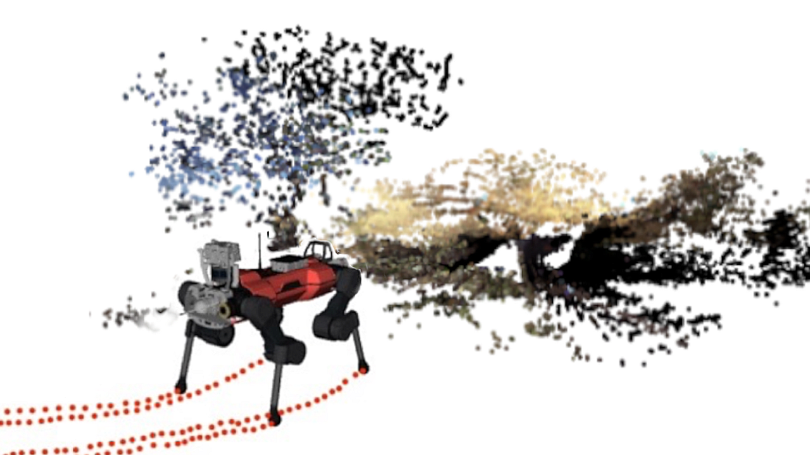
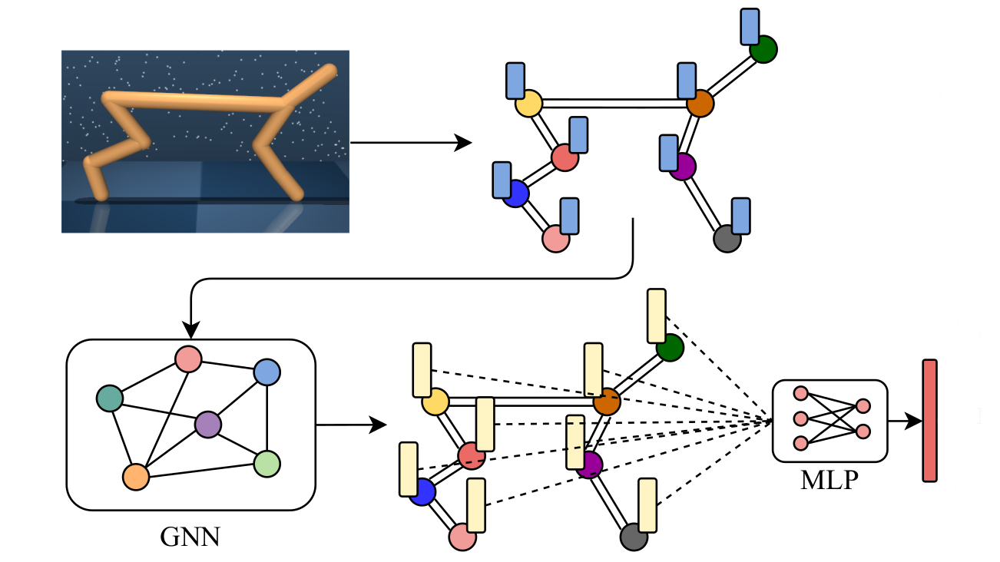
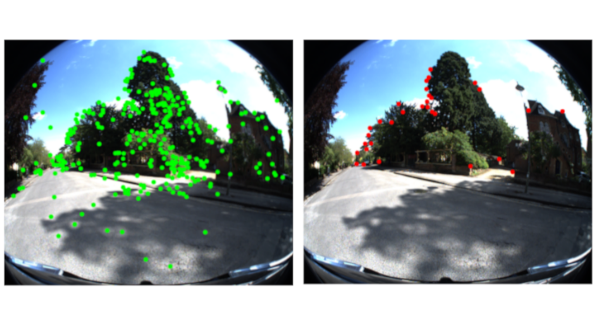

I'm a research engineer at the Robotic Systems Lab in ETH Zurich, where I work on mobile manipulation with ALMA, our legged robot with an arm.
I did my Master's in Robotics, Systems and Control (with distinction) at ETH Zurich, where I worked on a variety of projects in the topics of geometric computer vision, automated robot design, learning robot control, and high-level task planning with Large Language Models.
I also had the chance to work on flying robots at Flyability and Verity.
We propose to represent a scene as a database of viewpoints indexed by text tags of the recognized things at each viewpoint. The representation is extremely memory efficient and easily integrates with an LLM for planning and spatial reasoning grounded on the scene context.
We train a legged robot with an arm to robustly traverse through a variety of doors without prior knowledge of the
door's opening direction, instead estimating these properties during the task interaction.
Projects

Semantic Front-End Filter Going to the Jungle Perception and Learning for Robotics, ETH Zurich, 2022
poster
Self-supervised learning of a filter for reconstructing the walkable terrain in dense vegetation from semantic point cloud measurements.

On the Origins of Robot Morphologies Foundations of Reinforcement Learing, ETH Zurich, 2021
report
|
poster
A policy is trained using Reinforcement Learning on evolutionary rollouts, learning how to best change a robot's morphology for optimizing its performance in a given task.

Evaluating Visual Odometry & SLAM Initialization Methods for Arbitrary Multi-Camera Rigs 3D Vision, ETH Zurich, 2021
report
A study on the various factors contributing to the initialization quality for visual odometry and SLAM pipelines in multi-camera systems.
Teaching
Robot Dynamics
Head Teaching Assistant
ETH Zurich, Fall 2024